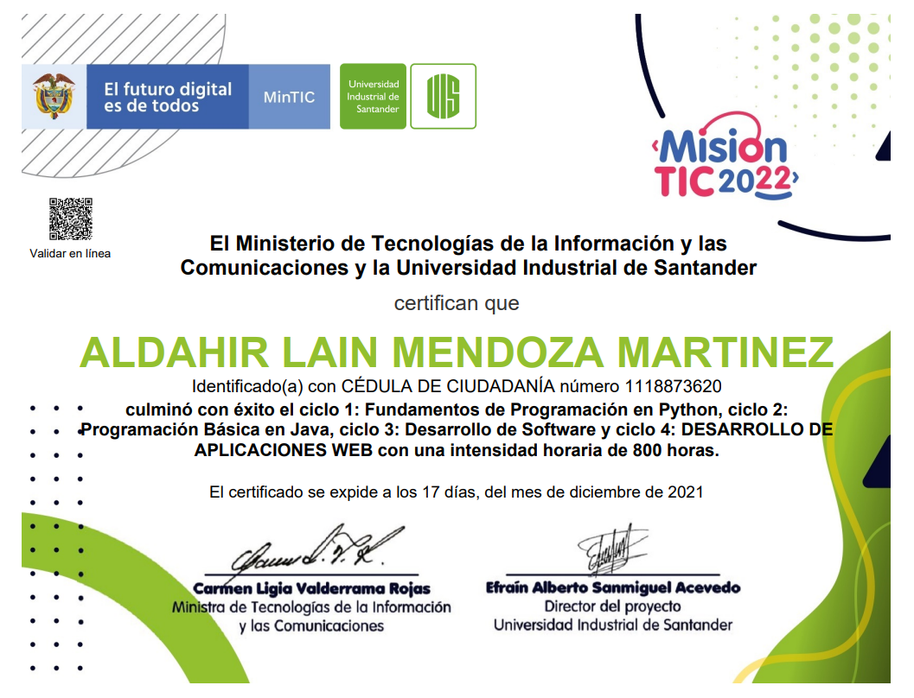

Certificados
Certificado Mision Tic 2022

Es un programa de formación en tecnologías de la información y la comunicación (TIC) diseñado para proporcionar a los estudiantes una comprensión completa y actualizada de las tendencias y herramientas más relevantes en el campo de las TIC. Durante el desarrollo del programa adquirí conocimientos en las siguientes áreas:
- Desarrollo web utilizando Java y Angular
- Programación en Python
- Maquetacion con HTML5 y CSS3 para desarrollo web
- Diseño, creación y administración de Bases de Datos
- Desarrollo de sistemas CRUD
- Metodología SCRUM
- Manejo de versiones con Github y Gitlab